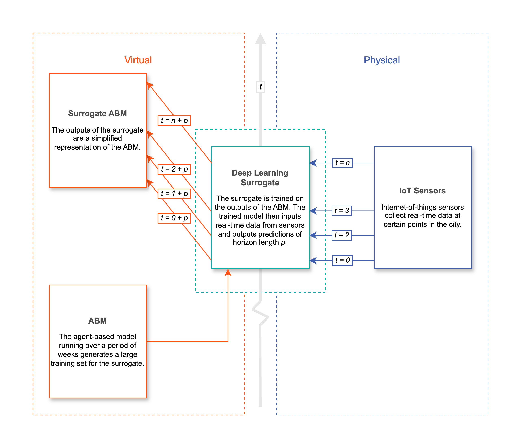
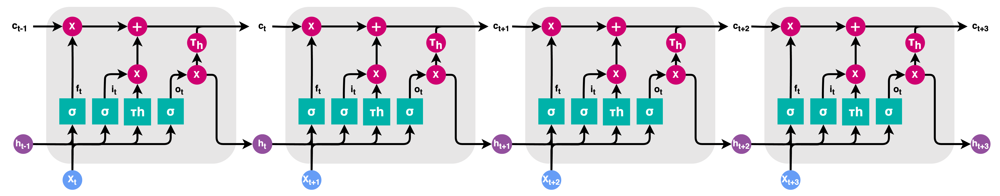
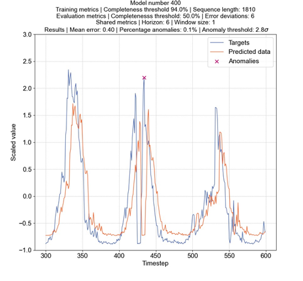
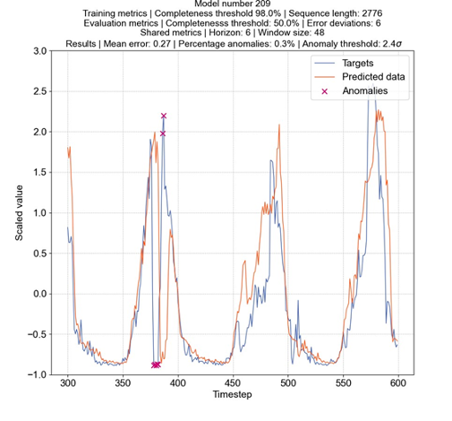
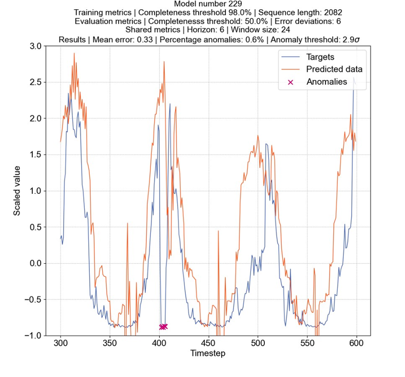

Towards Situational Awareness of Urban Pedestrian Flows: Data Quality Issues
Carrow Morris-WiltshireSupervised by Stuart Barr and Phil James


AIM
To develop a fast and efficient emulator for nowcasting a complex system.
(There are a number of caveats)
Apply the method to a case study of pedestrian flow data in Newcastle
Nowcasting at Scale
Requires 'quality awareness'
No room for manual calibration of sensors
Once confident in the real-time data...
Once confident in the real-time data...
Real-Time Prediction of Pedestrians at Scale
Real-Time Prediction of Pedestrians at Scale
- Emergency response
- Monitoring transportation infrastructure
- Optimising resource use
Issues with Data Quality
Incomplete / Inconsistent
(Sometimes) Unknown Accuracy
Timeliness
Dashboard v Alpha
Predictive Modelling
Predictive Modelling
Univariate Linear Model
Univariate LSTM Model
Multivariate Linear Model
Multivariate LSTM Model
Future Work
- Scale Anomaly Detection City-Wide
- Build an AI Model To Predict Spatial Dependencies
- Develop a Real-Time Emulator